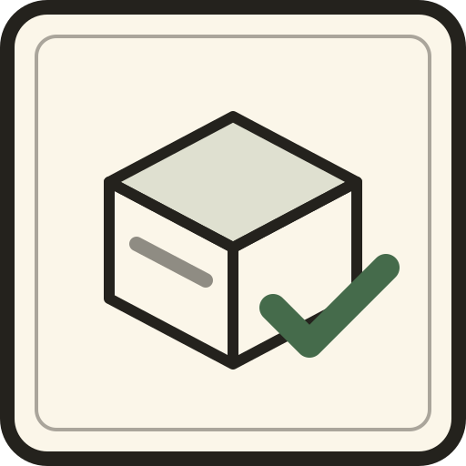

test/, all passingAbsolute, and the whole basis of the exercise:
What may be read is exactly what any other reader gets:
| Source | Why it is legitimate |
|---|---|
contract/help-json.json | the machine-readable command catalog — literally designed as the contract |
contract/guide.json | the embedded mental model, concepts, gotchas and examples |
contract/llms.txt | the public front door |
contract/spec-*.md | the agent-first CLI specs the tool is built to |
test/ and examples/ | the assertions and the userland scripts, both published |
| the live HTTP surface | what any caller can observe |
A second implementation earns its keep by finding things the first one cannot see about itself.
bkn's suites were written against a deployment whose fixtures had been
seeded by hand, so a fresh instance scores nonsense — t-files read
1/12 for want of two namespaces. dog.sh also takes its
admin token from $SP/admin.tok rather than the environment, so a mismatch
turns every write into a 403 and cascades into failures that look like missing
features. The seed is now written down.
Three of them were invisible until the fixtures were there, because
without seed data every suite failed for the wrong reason. Two were the same
shape and both presented as "the query found nothing": a
where clause that only understood the flat string form, and a
find() that dropped its criteria entirely and answered with whatever
happened to be first in the collection.
#672 —
sqlite_query returns [] for a query that failed,
indistinguishable from one that matched nothing; it silently broke three features in
a day. #673 — a goroutine
satisfies its own unbuffered channel send, so the keeper-lock idiom (the only way to
write a lock when every channel is unbuffered) spins at 100% CPU.
Six commands were fully implemented and simply absent from
help-json. Since that catalog is how an agent discovers the surface, a
working-but-unlisted command does not exist for any caller — and the contract suite is
blind to it, because it drives HTTP. A test now checks all three directions: everything
listed runs, everything the guide teaches is listed, everything listed is taught.
Needs the machin compiler and libssl-dev. QuickJS is vendored and
linked as a static archive, so the result is one file with no runtime dependencies.
Seed the fixtures first, or the score means nothing:
t-scriptaccess.sh starts its own instance, because a script can only be
created by the CLI on the machine holding the data — point it at the binary with
BKN_BIN.
Built to the agent-first CLI spec family. This is a verification instrument rather than a distributed tool, so the specs that exist to ship and support a product are deliberately out of scope.
| Spec | Status |
|---|---|
| cli-guide-spec | Yes — bkn guide [--human] (embedded, never fetched), GET /guide, GET /llms.txt |
| cli-output-spec | Partial — help-json, stdout = data, exit codes 0/80/81/85/110, typed errors over HTTP; CLI errors do not yet carry type/recoverable/suggestions |
| cli-daemon-spec | Partial — serve --host --port (loopback default), GET /_health; no /_shutdown, no daemon verbs |
| cli-update-spec | Out of scope — nothing here is distributed, so there is nothing to self-update |
| cli-feedback-spec | Out of scope — feedback on the contract belongs on bkn |
| cli-telemetry-spec | Out of scope — a test instrument counting its own runs measures nothing |